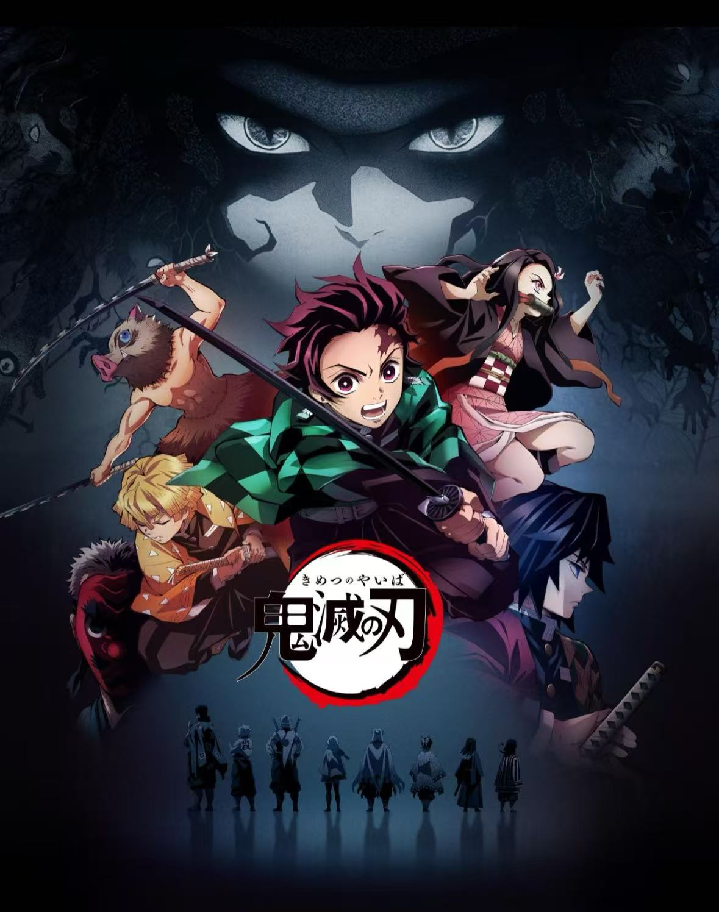
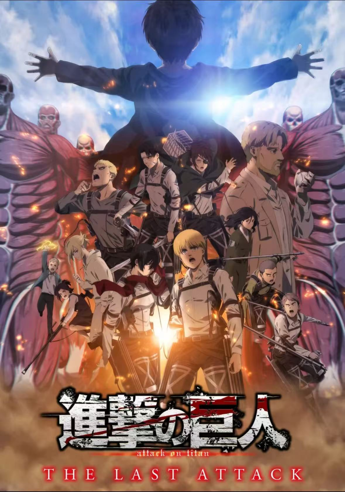

サイトについて
このサイトでは、私が好きなアニメ作品について紹介します。 アニメのストーリーや魅力を分かりやすく伝えることを目的としています。
アニメは、映像や音楽によって感情を豊かに表現できる点が魅力です。 見ることで、感動したり元気をもらったりすることができます。
アニメの紹介
ここでは、私が特に印象に残ったアニメ作品を紹介します。
鬼滅の刃

出典：「鬼滅の刃」公式ポータルサイト『鬼滅の刃』のキービジュアル
『鬼滅の刃』は、家族を失った主人公が鬼と戦いながら成長していく物語です。 迫力のある戦闘シーンと、美しい映像表現が魅力です。
進撃の巨人

出典：「進撃の巨人」公式ポータルサイト『進撃の巨人』のキービジュアル
『進撃の巨人』は、人類と巨人の戦いを描いたダークファンタジー作品です。 深いストーリーと予想外の展開が特徴です。
アニメ一覧
| 作品名 | ジャンル | 感想 |
|---|---|---|
| 鬼滅の刃 | バトル | 映像がきれいで感動した |
| 進撃の巨人 | ファンタジー | 考えさせられる内容だった |